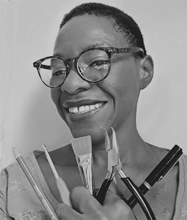

Hello, I'm Kikelomo.
Although my background is as an artist/product/graphic designer, advances in technology require additional skills. These are examples of my work as I journey into web development.

About
An artist and crafter since she was a toddler, Kikelomo Amusa-Shonubi has pursued Making both professionally and in her personal life. She received a Bachelor of Industrial Design (BID) from Pratt Institute with a focus on furniture design. She went on to receive a Master of Science (MS) in Digital Design from NYU.
Besides making, Ms. Amusa-Shonubi enjoys running, reading, baking, drawing and painting. When not in her tiny studio working, you can find her frequently hanging out with family and friends—including her sister’s cat, Batman. She also carries a secret desire to pet ALL the dogs and cats in NYC.